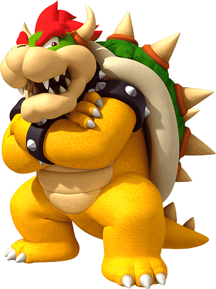

Bowser é rei dos Koopa Troppas, residentes do reino dos cogumelos,
seus servos e,
principalmente, inimigos de Mario e Luigi.
Bowser é pai de 8 filhos:
- Bowser Jr.
- Ludwig
- Morton
- Larry
- Lemmy
- Wendy
- Iggy
- Roy
Eles, junto de seu pai, estão sempre tentando capturar a princesa,
ou dominar o reino dos cogumelos de alguma forma.